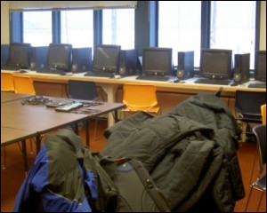
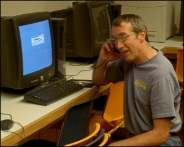

Lab facilities
With the initiative of Dr Richard Beck from the University of Cincinnati and science teacher Tim Buckley the geoinformatics lab at the Barrow High School was established in 2002. Purchase of computer hardware, software, and accessories such as printers and projector, were made possible via NASA and NSF funds. This spacious lab is currently equipped with:
Hardware:
- 15 Dell PCs with Windows 2000 OS
- 10 GarminMap76CS GPS
- LCD projector connected to a computer,
- Color printers: HP4600, HP5500 wide carriage
- Video monitor with video player.
- Standard legal size canner
Software:
- 15 computers with Arcview 3.x
- 1 computer with ArcGIS 9
- 1 computer with Erdas Imagine 8.7
- 1 computer with ENVI

With additional grants from other projects, Tim Buckley managed to procure appropriate winter gear which students can wear and go out even in extreme weather conditions. The science students routinely go out to make field observations that are used for validation of interpretations from processed remote sensing data. These include measurements of lake snow depths and temperatures, GPS measurements, etc. The GIS training allows the students to import the measurements into ArcView as shape files and plot their field observations onto maps right away.
The photo on the left shows Mr Buckley using his computer mouse to communicate. Perhaps he has a vision of technological advancement in the years to come!!